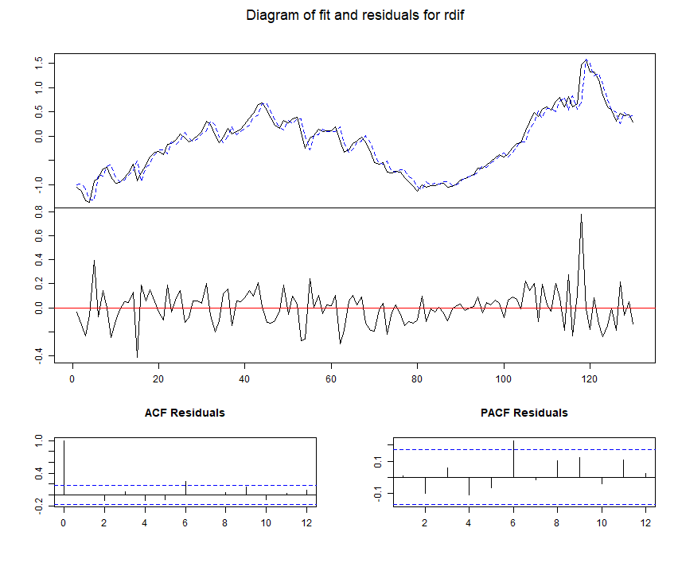
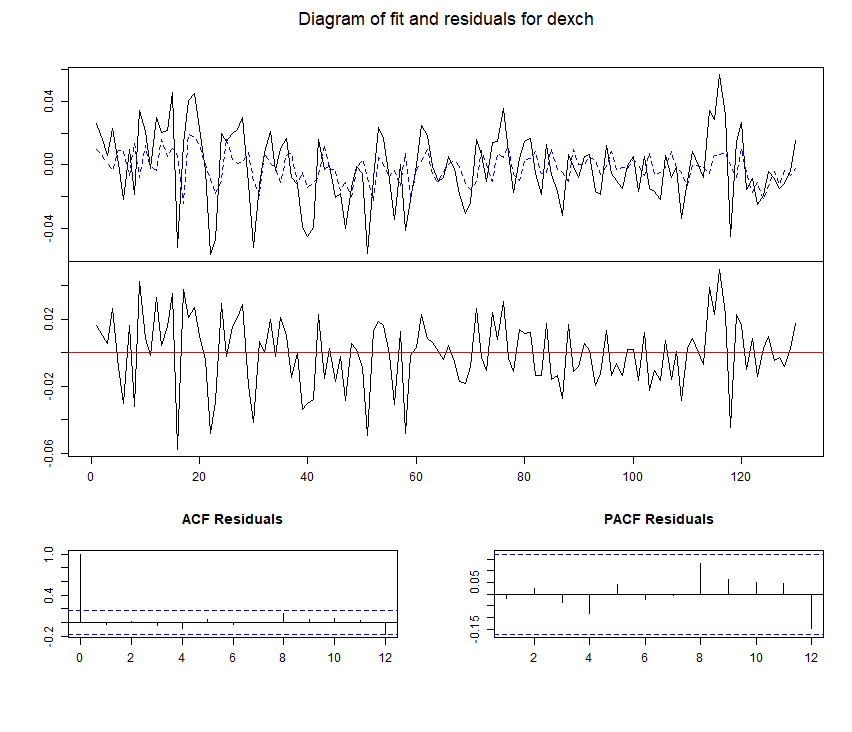
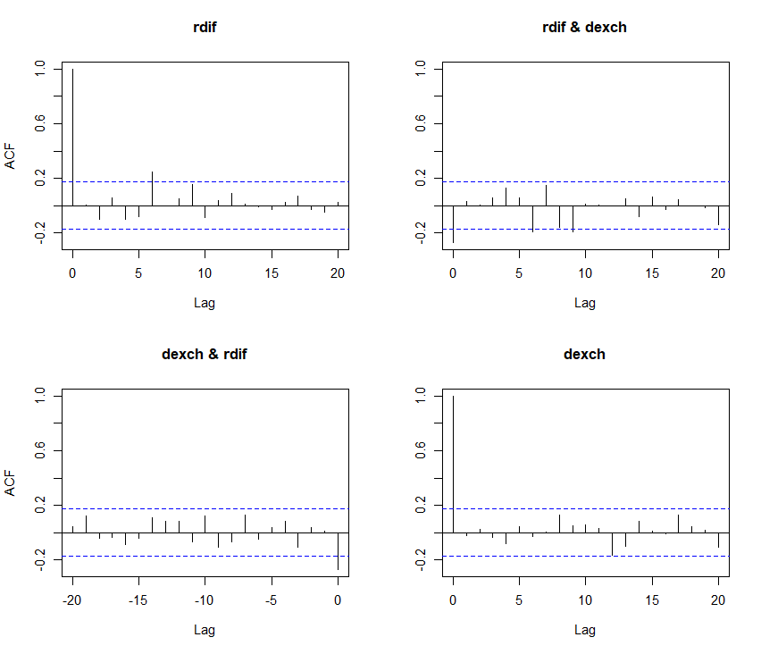

8 VAR(\(p\)): Model selection and diagnostic checking
8.1 Lag length selection
Using statistical tests in model selection. It is common to start the modeling from an unrestricted VAR model, because there is usually no sufficiently strong a prior information what the correct and specific parameter restrictions are or one wants to test some theory-based restrictions by Wald or LR tests.
In other words, the first task is to select the unknown lag length \(p\) of the VAR(\(p\)) model.
If one has reasons to choose a specific lag length, one can examine the appropriateness of the choice by testing VAR(\(p\)) against a higher order VAR. If the alternative model is the VAR(\(p+s\)) model \[\begin{equation*} \boldsymbol{y}_{t} = \boldsymbol{\nu} + \sum_{j=1}^{p+s} \boldsymbol{A}_{j} \boldsymbol{y}_{t-j} + \boldsymbol{u}_{t},\quad \boldsymbol{u}_{t}\sim \mathsf{nid}(\boldsymbol{0},\boldsymbol{\Sigma}_u), \end{equation*}\] then one conducts a test for the hypothesis \[\begin{equation*} H_{0}:\boldsymbol{A}_{p+1} = \cdots = \boldsymbol{A}_{s} = \boldsymbol{0}. \end{equation*}\] Let \[\begin{equation*} \widehat{\boldsymbol{\Sigma}}(p^*)=T^{-1}\sum_{t=1}^{T}\left(\boldsymbol{y}_{t}-\boldsymbol{X}_{t}^\prime\widehat{\boldsymbol{\pi}}\right)\left(\boldsymbol{y}_{t}-\boldsymbol{X}_{t}^\prime\widehat{\boldsymbol{\pi}}\right)^\prime \end{equation*}\] be the MLE for the error covariance matrix of the unrestricted VAR(\(p^*\)) model. Then, the above hypothesis can be tested by the LR test statistic \[\begin{equation*} \mathsf{LR}=2\left[\log\det(\widehat{\boldsymbol{\Sigma}}_u(p))-\log\det(\widehat{\boldsymbol{\Sigma}}_u(p+s))\right]\underset{as}{\sim}\chi_{K^{2}s}^{2} \end{equation*}\] Note that in this test statistic (as in the ones below) the estimators \(\widehat{\boldsymbol{\Sigma}}_u(p)\) and \(\widehat{\boldsymbol{\Sigma}}_u(p+s)\) apply the same number of observations. That is, the same sample period is used (this is not always automatically the case in different softwares.)
Sequential testing. As in the lag length selection of the univariate AR(\(p\)) model, also in the VAR context it is at times common to conduct a series of tests in a row by starting from a “sufficiently” long lag length \(P\).
If the hypothesis \(\boldsymbol{A}_{P} = \boldsymbol{0}\) is not rejected, one turns to testing the hypothesis \(\boldsymbol{A}_{P-1}=\boldsymbol{0}\).
If this hypothesis is not rejected one keeps on testing until the first rejection occurs
If none (hypotheses) is rejected, then one concludes that the order is zero.
This method is also similar to using the partial autocorrelation function to select the order of a univariate AR(\(p\)) model. In that case, if the first rejection occurs with an order that seems too large, one can proceed in the same manner without strict formal testing as is the case when a partial autocorrelation is used.
When the order of the VAR model is selected, one can apply Wald and LR tests to test for more detailed specification restrictions. This is natural when the underlying background theory implies interesting hypotheses.
8.2 Model selection criteria
There are various statistical criteria for selecting the order of an unrestricted VAR model, each based on different theoretical principles. When faced with a large number of alternative models, or when practical constraints, such as computationally intensive forecasting experiments, are present, the model selection criteria discussed below offer an effective strategy for model specification
Let again \(P\) be a predetermined sufficiently large lag order and \(\widehat{\boldsymbol{\Sigma}}(p^*)\) as above. Model selection criteria or information criteria are typically of the form \[\begin{equation*} C(p^*)=\log\det(\widehat{\boldsymbol{\Sigma}}_u(p^*))+\frac{f(T)}{T}d, \quad p^*=1,\ldots,P, \end{equation*}\] where \(p^*\) is the order of the model, \(d\) is the number of corresponding unrestricted autoregressive and intercept parameters (\(d=K(Kp^*+1)\) for an unrestricted VAR(\(k\)) model)) and \(f\) is the so called penalty function that satisfies \(f(T)/T\rightarrow 0\) as \(T\rightarrow \infty\).
The idea of the penalty function is to prevent one from choosing too large a model.
The first part of the criterion measures the goodness of fit and if a larger \(p^*\) does not increase it much enough then the larger model is not favored. This becomes clear by noticing that when comparing the values of the criterion function the first term could be the maximum of the \(-K-(2/T)\times\log\) likelihood function.
For good (preferable) models \(C(p^*)\) takes on small values.
As for univariate models, some familiar penalty functions are \[\begin{eqnarray*} \mathrm{AIC}&:& f\left( T\right) =2 \quad \mathrm{(Akaike,\, 1974)} \\ \mathrm{HQ}&:& f\left( T\right) =2\log (\log T) \quad \mathrm{(Hannan\, and\, Quinn,\, 1979)} \\ \mathrm{BIC}&:& f\left( T\right) =\log T \quad \mathrm{(Schwarz,\, 1978; \, Rissanen,\, 1978)} \end{eqnarray*}\] AIC is the most liberal and (favors larger models), while BIC is the most stringent (favors smaller models).
There is a version of HQ, where the constant term (\(2\)) is replaced by another constant.
HQ and BIC result in consistent estimators for the lag order, when the lag order choice is based on minimization of the criterion.
In practice it is recommended that one uses model selection criteria as an additional device and that the model choice is not made mechanically.
As was noted earlier, model selection criteria can also be used to compare models subject to constraints. In such cases, the maximum likelihood estimator on the right hand side of information criterion is formed from a restricted VAR model.
This procedure is applied especially when it is difficult to formalize relevant hypotheses and there are several alternative models.
One possibility is to estimate all possible model variants and compute the criterion for each model (as in the case of unrestricted models). This tends to lead to rather tedious computations. Hence various step-wise procedures have been suggested. In the case of zero restrictions one possibility is to drop one explanatory variable (that is, a component from the lag \(\boldsymbol{y}_{t-j},\ j=1,\ldots,p\)) at the time and compute the criterion for the corresponding models. In the next step one starts from the model whose criterion value in the previous step had the largest drop compared to the initial model. This is repeated so that one of the explanatory variables is dropped until the criterion value no longer drops compared to the previous step.
Example (continued), model selection and estimation outcome. Let’s apply the previously presented model selection procedure to the exchange rate/interest rate data. When the maximum lag is chosen as \(P=6\), we get the following results when using the LR test (denoted by LR(\(p^*\))) between the VAR models with lag lengths \(p^*\) and \(p^*-1\):
Test LR test stat. p-value
LR(2) 17.154 0.002
LR(3) 2.099 0.717
LR(4) 4.602 0.331
LR(5) 3.153 0.535
LR(6) 1.671 0.796The results point clearly to \(p=2\) (given the maximum lag length was sufficiently long to begin with), which results to the following estimated results: \[\begin{eqnarray} \left[ \begin{array}{c} \underset{}{rdif_{t}} \\ \underset{}{dexch_{t}} \end{array} \right] &=&\left[ \begin{array}{c} \underset{(0.014)}{0.003}\,\, \\ \underset{(0.002)}{-0.002} \end{array} \right] +\left[ \begin{array}{cc} \underset{(0.090)}{1.139} & \underset{(0.661)}{-0.223}\,\, \\ \underset{(0.012)}{0.024} & \underset{(0.089)}{0.405} \end{array} \right] \left[ \begin{array}{c} \underset{}{rdif_{t-1}} \\ \underset{}{dexch_{t-1}} \end{array} \right] \label{URVAR(2)} \\ &&+\left[ \begin{array}{cc} \underset{(0.090)}{-0.176} & \underset{(0.647)}{0.635}\,\, \\ \underset{(0.012)}{-0.028} & \underset{(0.087)}{-0.181} \end{array} \right] \left[ \begin{array}{c} \underset{}{rdif_{t-2}} \\ \underset{}{dexch_{t-2}} \end{array} \right] +\left[ \begin{array}{c} \underset{}{\widehat{u}_{1t}} \\ \underset{}{\widehat{u}_{2t}} \end{array} \right]. \notag \end{eqnarray}\] The approximate standard error are in brackets under the estimates. The correlation coefficient of the residuals is -0.272 so the errors of the model are slightly correlated. The estimated model fulfills the stationarity condition since the absolute value of the highest eigenvalue of the ML estimate for the companion form matrix \(\mathbf{A}\) is 0.951.
Some estimates are small in relation to their standard errors, which indicates that further restrictions on the model could be inserted in.
We will get back to this later (also as an example of constrained VAR estimation).
8.3 Diagnostic checks
Residuals are also useful for investigating model adequacy. For an unconstrained model the residuals are defined by \[\begin{equation*} \widehat{\boldsymbol{u}}_{t} = \boldsymbol{y}_{t}-\widehat{\boldsymbol{\nu}} - \widehat{\boldsymbol{A}}_{1} \boldsymbol{y}_{t-1}-\cdots -\widehat{\boldsymbol{A}}_{p} \boldsymbol{y}_{t-p},\quad t=1, \ldots,T. \end{equation*}\] The residuals should have similar properties to those of the theoretical errors \(\boldsymbol{u}_{t}\). To investigate this it is useful
to examine residual plots,
check whether there are individual or groups of “outliers”,
whether there are signs of changes in variance, or other clearly systematic features.
It is also often recommended to examine whether the residuals are (multi)normally distributed, although the asymptotic estimation and test theory does not entail normality of the error terms (\(\mathsf{iid}\) assumption suffices). i Empirical auto- and cross-correlation functions for the residuals may also reveal potential serial dependencies in the model errors. If \(\boldsymbol{u}_{t}\sim\mathsf{iid}(\boldsymbol{0},\boldsymbol{\boldsymbol{\Sigma}}_u)\), then the residual auto- and cross-correlations are asymptotically normal with mean zero. Unlike in the case of theoretical model errors, these are not asymptotically independent and the \(\mathsf{N}(0,1/T)\) approximation (for the one variable) does not hold.
The true asymptotic distribution can be derived, but is not considered in the course.
Some econometric programs (e.g., R) may print residual auto- and cross-correlations along with their true asymptotic standard errors or corresponding critical bounds that allow one to examine whether the residuals are serially dependent.
Portmanteau test. It is also possible to test for the presence of residual serial correlation. The so called Portmanteau test is directly based on residual auto- and cross-correlation functions (a multivariate extension of the Ljung-Box test). One version of it is \[\begin{equation*} Q_{H}^{\ast} = T^{2}\sum_{h=1}^{H}\frac{1}{T-h}\mathsf{tr}\left( \mathcal{\boldsymbol{S}}_{h}^{\prime }\mathcal{\boldsymbol{S}}_{0}^{-1}\mathcal{\boldsymbol{S}}_{h}\mathcal{\boldsymbol{S}}_{0}^{-1}\right),\ \mathcal{\boldsymbol{S}}_{h} =\sum_{t=1}^{T-h}\widehat{\boldsymbol{u}}_{t}\widehat{\boldsymbol{u}}_{t+h}^{\prime}, \end{equation*}\] where the null hypothesis is that there is no autocorrelation (here in the residuals) remaining. If the chosen unrestricted VAR(\(p\)) model error \(\boldsymbol{u}_{t}\sim \mathsf{iid}(\boldsymbol{0},\boldsymbol{\boldsymbol{\Sigma}}_u)\), then \(Q_{H}^{\ast}\) is asymptotically \(\chi^{2}\)-distributed with degrees of freedom equal to \(K^{2}(H-p)\). If the model is restricted, the value of the degree of freedom of the \(\chi^{2}\)-distribution is \(K^{2}H\) minus the number of unrestricted autoregressive parameters. The asymptotic result entails that \(H\) is “large”.
Although there may be no reason to suspect residual (auto)correlation, the residuals might not be independent, as zero correlation is only related to linear independency.
- In order to examine possible nonlinear dependencies (in a restricted sense) one can use auto- and cross-correlations based on squared residuals.
- In this case, the usual standard errors and test statistics are not valid without appropriate adjustments.
Example (continued). Below, we report the fitted values of the VAR(2) model for \(rdif\) and \(dexch\). The plots also depict the residual time series along with their sample auto- and cross-correlation coefficients. The variation in the second residual series (\(dexch\)) appears to be slightly higher at the beginning, while the first residual series (\(rdif\)) exhibits some notable spikes. Despite these features, the residuals appear to be “reasonably random”. The auto- and cross-correlations of the residuals are generally small, with the exception of a few isolated spikes at higher-order lags.


We employ the Portmanteau test (as discussed above) to check for remaining autocorrelation in the residuals. The results reported below show that the p-values exceed standard significance levels, indicating that the model specification is adequate (i.e., we fail to reject the null hypothesis of no autocorrelation at the conventional statistical significance levels).
In addition to checking for autocorrelation, we examine the distributional properties of the residuals. Plotting the histogram of the (standardized) residuals reveals a distribution with heavier tails than the normal distribution (leptokurtosis)—a feature hinted at by earlier graphical examinations (see the attached R code for plots not explicitly depicted here).
Furthermore, the slight correlation observed in the squared residuals at certain lags points toward conditional heteroskedasticity (ARCH effects) and a consequent deviation from Gaussianity.
Overall, despite these distributional nuances, the model can be regarded as a reasonably successful specification.
Portmanteau Test (adjusted):
H=12: Chi-squared = 51.062, df = 40, p-value = 0.1129
H=6:Chi-squared = 21.248, df = 16, p-value = 0.1692
H=15: Chi-squared = 58.683, df = 52, p-value = 0.2438